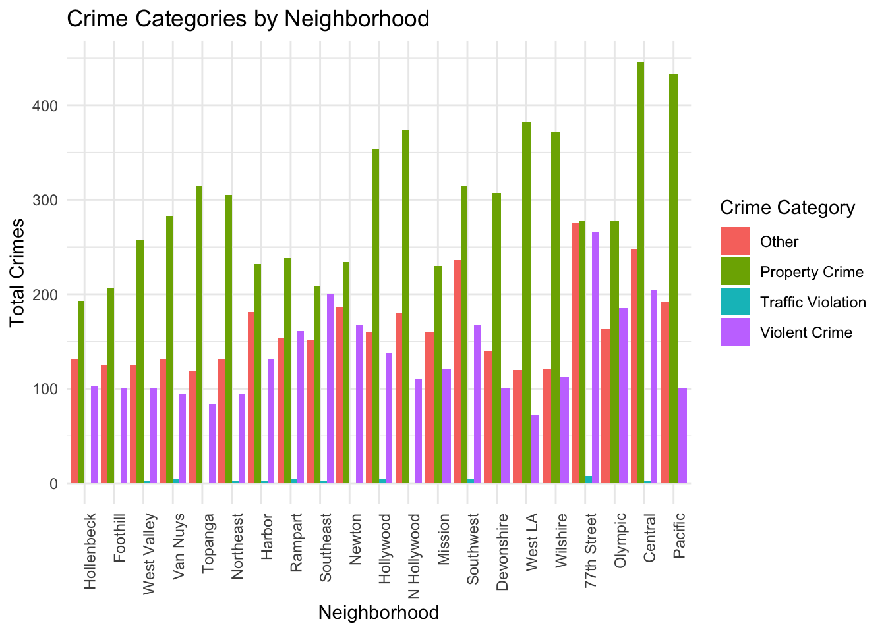
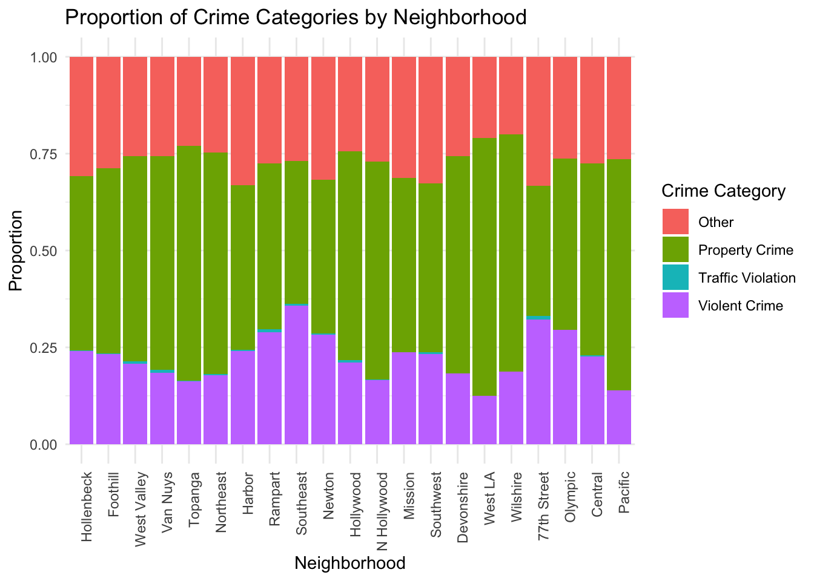
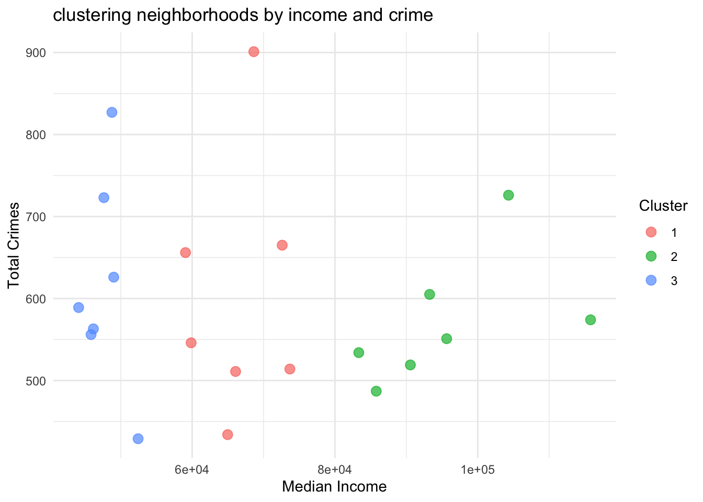
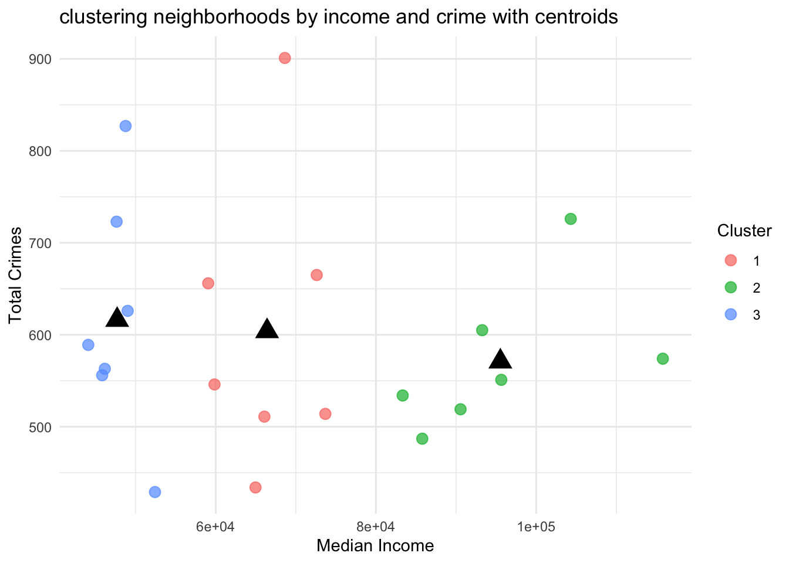

── Attaching core tidyverse packages ──────────────────────── tidyverse 2.0.0 ──
✔ dplyr 1.1.4 ✔ readr 2.1.5
✔ forcats 1.0.0 ✔ stringr 1.5.1
✔ ggplot2 3.5.1 ✔ tibble 3.2.1
✔ lubridate 1.9.3 ✔ tidyr 1.3.1
✔ purrr 1.0.2
── Conflicts ────────────────────────────────────────── tidyverse_conflicts() ──
✖ dplyr::filter() masks stats::filter()
✖ dplyr::lag() masks stats::lag()
ℹ Use the conflicted package (<http://conflicted.r-lib.org/>) to force all conflicts to become errors
Linking to GEOS 3.11.0, GDAL 3.5.3, PROJ 9.1.0; sf_use_s2() is TRUE
here() starts at /Users/seanfung/Documents/BU Fall 2024/MA 415/MA 415 G4 Final Project
Loading required package: viridisLite
To install your API key for use in future sessions, run this function with `install = TRUE`.
Getting data from the 2016-2020 5-year ACS
Downloading feature geometry from the Census website. To cache shapefiles for use in future sessions, set `options(tigris_use_cache = TRUE)`.Crime V Median Income
`geom_smooth()` using formula = 'y ~ x'
Economic Heatmap (Without Crime Data)
-1.png)
Plot: Combined Map with Income and Crime Data – Black Dots (Crime Locations) on Economic Data Heatmap

Linear Model
Call:
lm(formula = total_crimes ~ avg_income, data = crime_summary)
Residuals:
Min 1Q Median 3Q Max
-5.480 -2.887 -1.364 1.186 125.843
Coefficients:
Estimate Std. Error t value Pr(>|t|)
(Intercept) 6.528e+00 2.414e-01 27.048 < 2e-16 ***
avg_income -1.952e-05 2.784e-06 -7.013 3.05e-12 ***
---
Signif. codes: 0 '***' 0.001 '**' 0.01 '*' 0.05 '.' 0.1 ' ' 1
Residual standard error: 5.608 on 2319 degrees of freedom
Multiple R-squared: 0.02077, Adjusted R-squared: 0.02034
F-statistic: 49.18 on 1 and 2319 DF, p-value: 3.054e-12Based on the above models, we need to be looking at the certain areas with crime data as the LAPD seems to be concentrated in the multiple districts in the Southwest. Try to adjust for bias.
Crime in each neighborhood
# Define broader crime categories based on `Crm.Cd.Desc`
crime_with_neighborhoods <- crime_with_neighborhoods %>%
mutate(Crime_Category = case_when(
str_detect(Crm.Cd.Desc, "BURGLARY|THEFT|VANDALISM|EMBEZZLEMENT|FORGERY|SHOPLIFTING") ~ "Property Crime",
str_detect(Crm.Cd.Desc, "ASSAULT|ROBBERY|HOMICIDE|KIDNAPPING|SEXUAL ASSAULT") ~ "Violent Crime",
str_detect(Crm.Cd.Desc, "DRUG") ~ "Drug Offense",
str_detect(Crm.Cd.Desc, "TRAFFIC|DRIVING|DUI|FAILURE TO YIELD") ~ "Traffic Violation",
TRUE ~ "Other"
))
crime_summary <- crime_with_neighborhoods %>%
group_by(AREA.NAME, Crime_Category) %>%
summarize(total_crimes = n(), .groups = "drop")
ggplot(crime_summary, aes(x = reorder(AREA.NAME, total_crimes), y = total_crimes, fill = Crime_Category)) +
geom_bar(stat = "identity", position = "dodge") +
labs(
title = "Crime Categories by Neighborhood",
x = "Neighborhood",
y = "Total Crimes",
fill = "Crime Category"
) +
theme_minimal() +
theme(axis.text.x = element_text(angle = 90, hjust = 1))
ggplot(crime_summary, aes(x = reorder(AREA.NAME, total_crimes), y = total_crimes, fill = Crime_Category)) +
geom_bar(stat = "identity", position = "fill") +
labs(
title = "Proportion of Crime Categories by Neighborhood",
x = "Neighborhood",
y = "Proportion",
fill = "Crime Category"
) +
theme_minimal() +
theme(axis.text.x = element_text(angle = 90, hjust = 1))
These graphs tell a compelling story about crime patterns in neighborhoods. Property crimes are a widespread issue, while violent crimes are relatively localized. Hollywood and similar areas show distinctive crime patterns, suggesting localized factors influencing crime dynamics.The 77th Street neighborhood stands out in both graphs due to the almost equal distribution of Property Crime and Other Crime categories. This is unusual compared to most neighborhoods where Property Crime significantly dominates.
library(dplyr)
library(ggplot2)
set.seed(123)
kmeans_data <- crime_with_income %>%
group_by(AREA.NAME) %>%
summarize(
avg_income = mean(estimate, na.rm = TRUE),
total_crimes = n()
) %>%
na.omit()
kmeans_data_numeric <- kmeans_data %>%
st_drop_geometry() %>%
select(avg_income, total_crimes)
kmeans_result <- kmeans(kmeans_data_numeric, centers = 3)
kmeans_data <- kmeans_data %>%
mutate(cluster = factor(kmeans_result$cluster))
ggplot(kmeans_data, aes(x = avg_income, y = total_crimes, color = cluster)) +
geom_point(size = 3, alpha = 0.7) +
labs(
title = "clustering neighborhoods by income and crime",
x = "Median Income",
y = "Total Crimes",
color = "Cluster"
) +
theme_minimal()
cluster 1: moderate crime counts and moderate income levels cluster 2: higher income levels and lower crime counts cluster 3: high crime counts and lower income levels
cluster_centers <- as.data.frame(kmeans_result$centers)
ggplot(kmeans_data, aes(x = avg_income, y = total_crimes, color = cluster)) +
geom_point(size = 3, alpha = 0.7) +
geom_point(data = cluster_centers, aes(x = avg_income, y = total_crimes), size = 5, shape = 17, color = "black") +
labs(
title = "clustering neighborhoods by income and crime with centroids",
x = "Median Income",
y = "Total Crimes",
color = "Cluster"
) +
theme_minimal()
the black triangles represent the average values of income and crime for each cluster. this shows that crime counts decrease as median income increases.